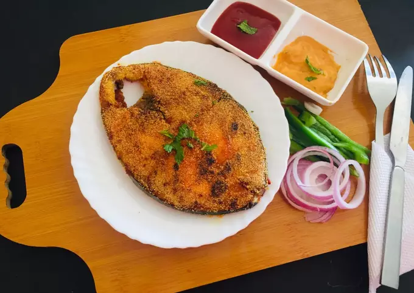

Konkani King Fish Fry

Description
Fried surmai is a typical Goan and Konkani recipe. The fried Kingfish which is very good to taste is mostly eaten with hot rice and curry.
Ingredients
- 1 whole surmai (kingfish) sliced into medium pieces
- 4-5 cloves of garlic
- 2-3 pieces of ginger
- 4-5 chillies
- chopped coriander
- 2-3 tsp red chilly powder
- 2-3 tsp turmeric
- salt to taste
- rava (semolina) or rice flour for coating
- oil
Steps
- For Marination take ginger, garlic, chillies and coriander into a mixer and grind it to a thick paste. add little water if need but not too much. add pinch of salt.
- Add this paste to sliced surmai. add red chilli powder and turmeric to the fish and mix everything well. add salt to taste. remember the green paste has little salt in it. so add to the necessity.
- keep this marination for about 30-35 mins.
- after 35 mins, take some oil in a pan and heat it well.
- take some rava or rice flour (as per your choice) in a plate and dip every marinated fish piece into the flour, coat it well an shallow fry it in the pan.
- fry well till it cooks. serve with steamed rice and curry.